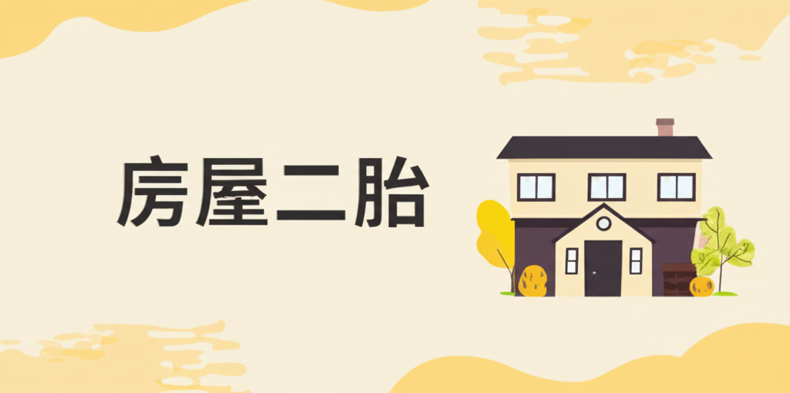

房屋二胎
引言
房屋二胎，顧名思義，是指將已經抵押給銀行或其他金融機構的房屋，再次抵押給另一家銀行或金融機構，以獲取貸款。在資金周轉困難或有額外資金需求時，房屋二胎提供了一種相對快速便捷的融資管道。然而，房屋二胎涉及較高的風險和成本，因此在申請前應充分了解相關知識，謹慎評估自身財務狀況。本文將深入探討房屋二胎的各個方面，幫助讀者做出明智的決策。
主體內容
第一點：房屋二胎的運作原理和流程
房屋二胎的本質是再次抵押房產。由於房屋已經存在第一順位抵押權（通常是銀行），第二順位抵押權（也就是二胎貸款）的權利順序較低，因此風險也相對較高。
申請流程大致如下：
- 評估房屋價值： 二胎貸款機構會重新評估房屋的價值，以確定可貸款的額度。
- 提交申請資料： 包括身分證明、房屋所有權狀、第一順位貸款合約、收入證明等。
- 貸款機構審核： 審核申請人的信用狀況、還款能力以及房屋的價值。
- 簽訂貸款合約： 簽訂貸款合約，明確貸款金額、利率、還款方式等。
- 設定抵押權： 將二胎貸款的抵押權設定在房屋上。
- 撥款： 貸款機構將貸款撥付給申請人。
第二點：房屋二胎的優缺點
優點：
- 快速取得資金： 相較於其他貸款方式，房屋二胎審核速度較快，能夠在短時間內取得資金。
- 貸款額度較高： 房屋二胎的貸款額度通常較個人信用貸款高，能夠滿足較大的資金需求。
- 用途廣泛： 貸款資金可用於投資、創業、資金周轉等多種用途。
缺點：
- 利率較高： 由於風險較高，房屋二胎的利率通常比第一順位貸款高。
- 還款壓力大： 除了償還第一順位貸款外，還需償還二胎貸款，還款壓力較大。
- 喪失房屋風險： 若無法按時還款，房屋可能被貸款機構拍賣，喪失房屋所有權。
- 可貸額度受限： 可貸額度受限於房屋剩餘價值和貸款機構的評估，可能無法滿足所有資金需求。
第三點：申請房屋二胎的注意事項
- 謹慎評估財務狀況： 申請前應詳細評估自身的財務狀況，確認有足夠的還款能力。
- 比較不同貸款機構的方案： 不同的貸款機構提供的利率、額度、還款方式可能不同，應多方比較，選擇最適合自己的方案。
- 仔細閱讀貸款合約： 在簽訂貸款合約前，應仔細閱讀合約條款，了解所有權利義務。
- 了解相關費用： 除了利息之外，還可能需要支付手續費、評估費、代書費等，應事先了解清楚。
- 尋求專業諮詢： 如有疑問，可以尋求專業的財務顧問或律師的諮詢。
結論
房屋二胎雖然能快速取得資金，但同時也伴隨著較高的風險。在申請前，務必謹慎評估自身財務狀況，充分了解相關知識，並尋求專業的諮詢，才能做出明智的決策，避免不必要的財務風險。切記，房屋是重要的資產，應謹慎使用。